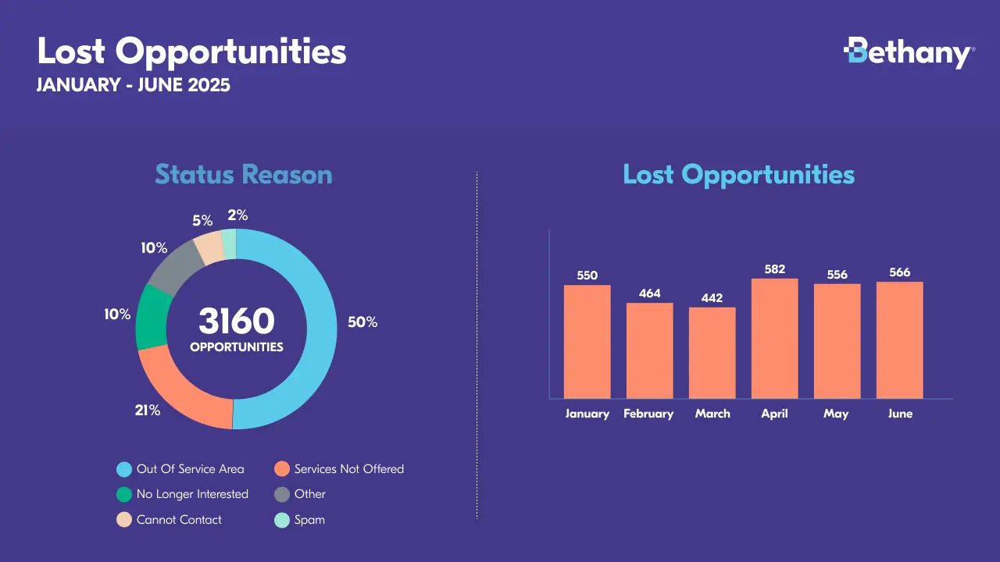
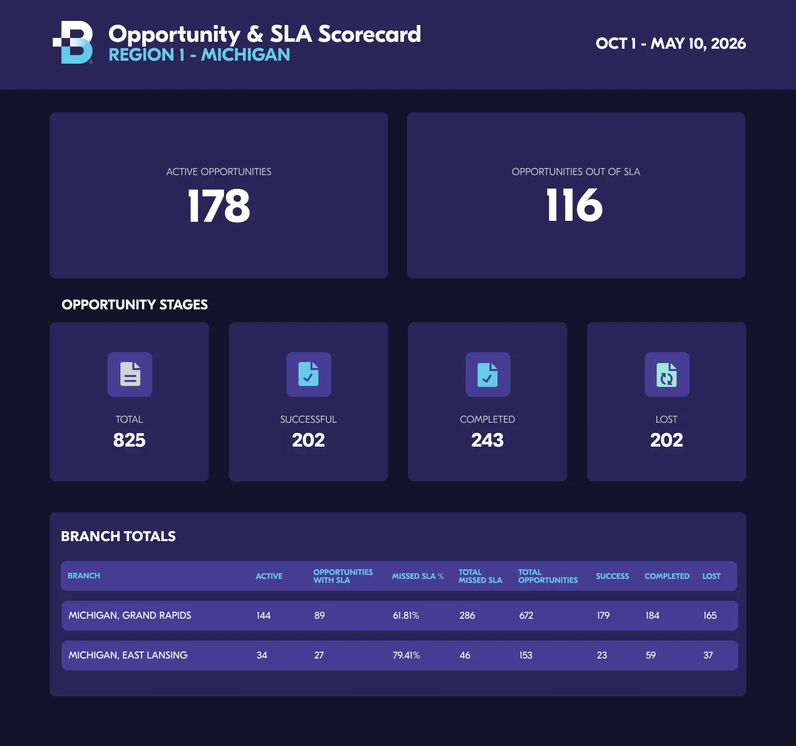
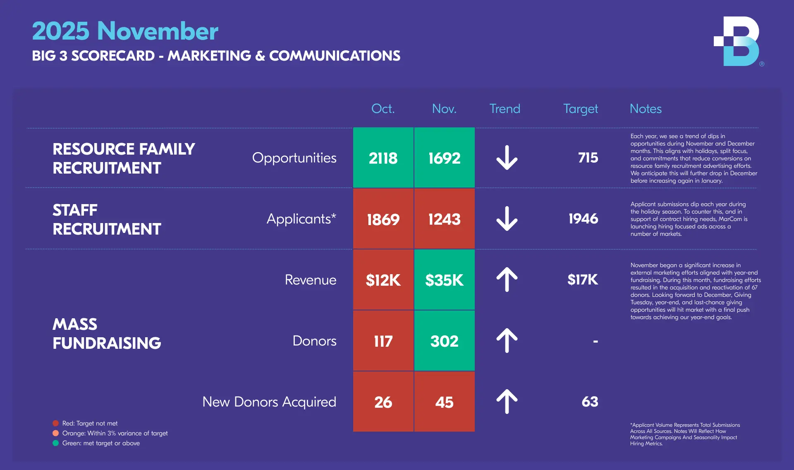
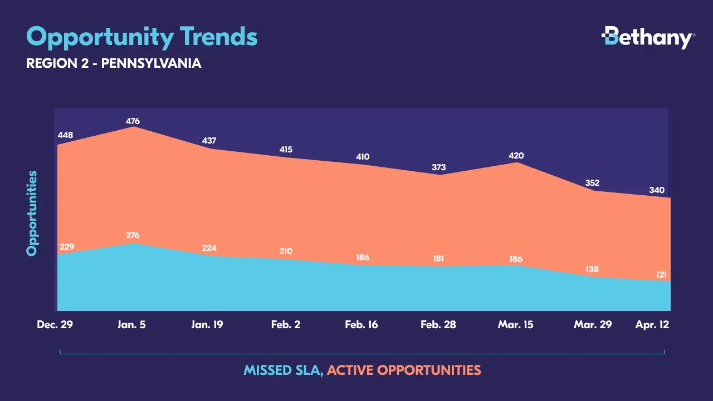
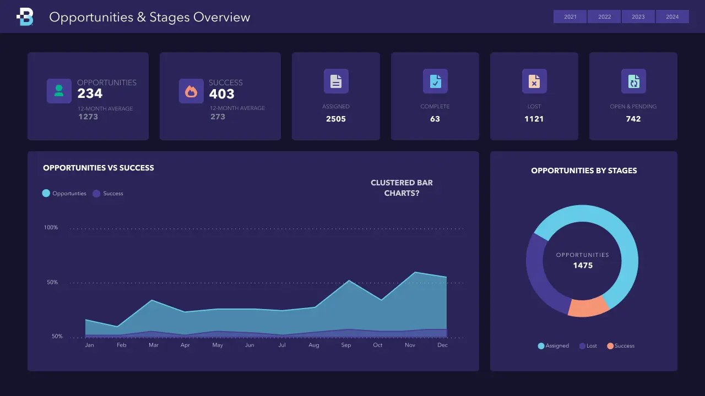
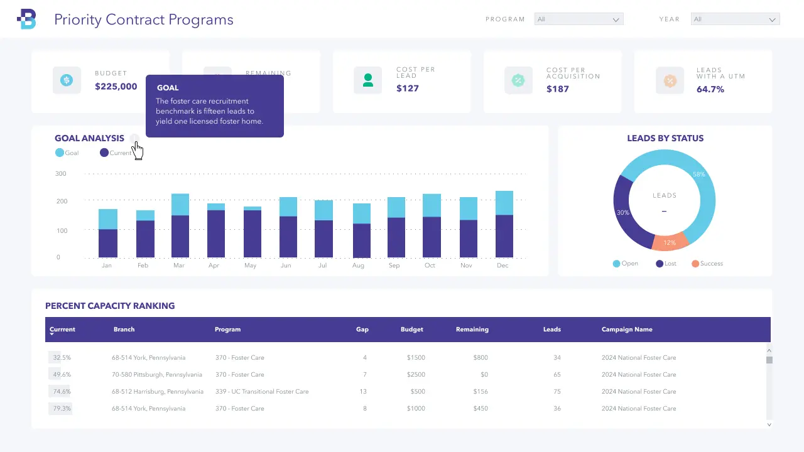
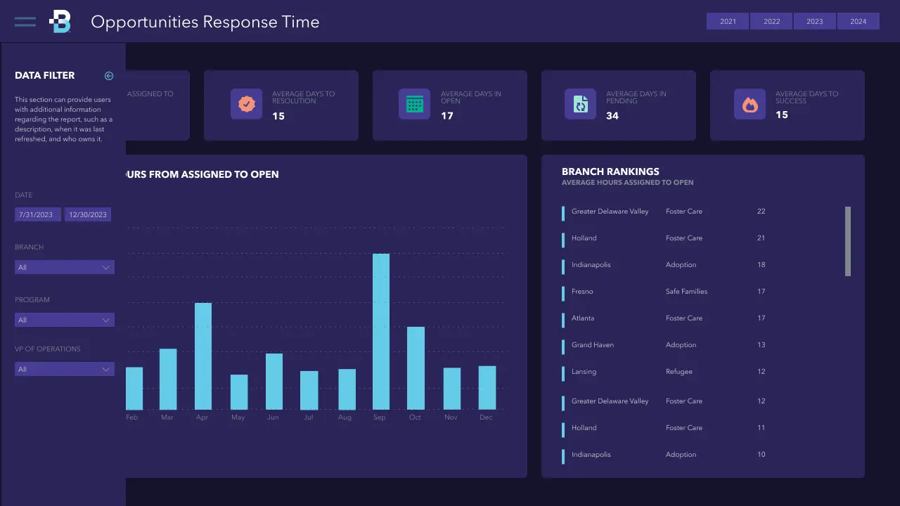
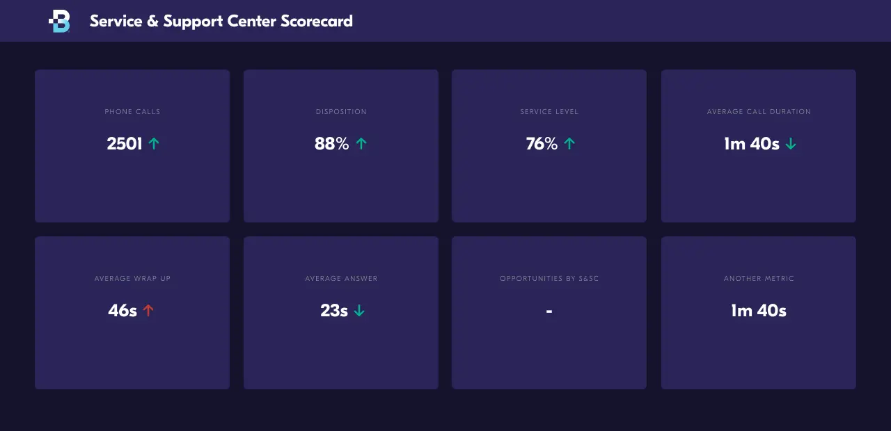
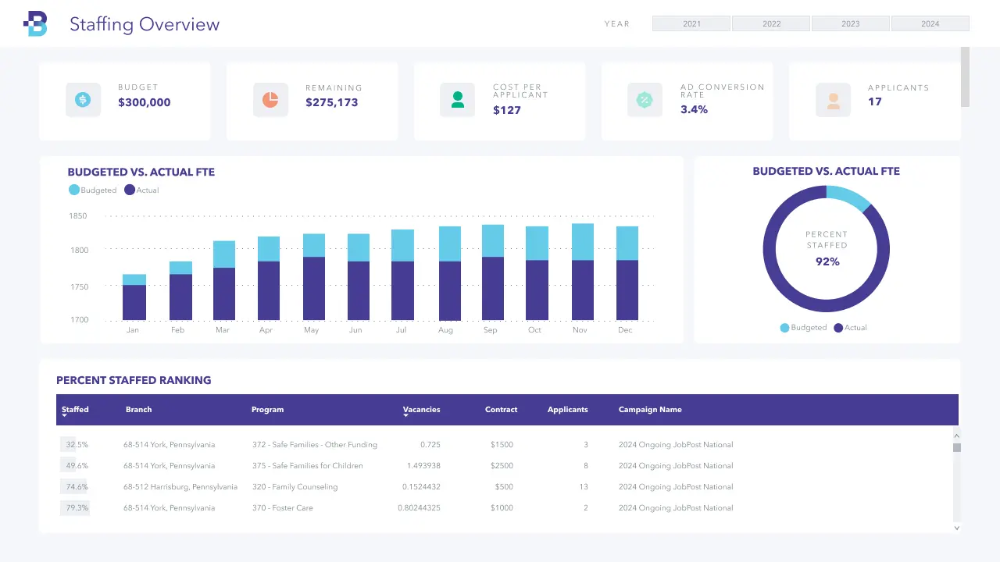

Bethany Data Visualization
Design, Brand, Data Visualization, Design Systems
I led cross-functional teams at Bethany to turn complex operational data into clear insights through data visualizations and dashboards. Working with stakeholders, we identified what information teams needed and determined whether static reports or real-time dashboards would provide the most value. These tools gave executive leadership better visibility into performance, priorities, and areas for improvement. The insights continue to support operational discipline, process improvements, and strategic decision-making across the organization.








